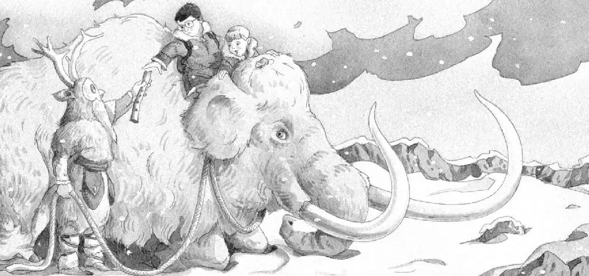

The sorcerer didn’t speak. He stared through the eyeholes of the owl mask.
“Help us, please,” said Annie.
The sorcerer threw a rope into the pit. Jack grabbed it.
“He wants to pull us up,” said Annie.
Jack looked up. The sorcerer was gone.
“Where did he go?” Jack said.
“Tug on the rope,” said Annie.
Jack tugged. The rope tightened. It began rising.
“I’ll go first!” said Annie cheerfully.
“Annie, this isn’t a game,” warned Jack.
“Don’t worry, I’ll be careful.”
Jack gave her the rope. “Okay. But hold on tight,” he said.
Annie held the rope with both hands. She pushed her feet against the side of the pit. She rose into the air with the rope.
She kept pressing against the side of the pit—until she reached the top.
Jack saw the sorcerer reappear and help Annie up. Then they moved out of sight.
Jack was puzzled. The sorcerer had used both hands to help Annie. So who held the other end of the rope?
“Wow!” came Annie’s voice.
What’s going on? Jack wondered.
The sorcerer came back and threw the rope down again.
Jack grabbed it. And the rope started to rise.
Jack held on tight. He started up. His hands burned. His arms felt as if they were being pulled out of their sockets.
But he kept his hold on the rope and his feet against the side of the pit.
At the top the sorcerer pulled Jack onto the snowy ground.
“Thanks,” said Jack, standing.
The sorcerer was tall. He wore a long fur robe. Jack could see only his eyes through the owl mask.
“Hey!” Annie called.
Jack turned.
Annie was sitting on a woolly mammoth.
Squeak. Peanut was sitting on the mammoth’s head.
The mammoth looked like a giant elephant with shaggy reddish hair and long, curved tusks.
The other end of the rope was around the mammoth’s huge neck.
“Lulu pulled us up,” said Annie.
“Lulu?” said Jack.
“Don’t you think she looks like a Lulu?” said Annie.
“Oh brother,” said Jack. He walked up to the mammoth.
“Hey, mammoth starts with M,” said Annie. “Maybe Lulu’s the special thing!”
“I don’t think so,” said Jack.
The great creature knelt down, just like a circus elephant.
“Whoa!” said Annie. She clutched the mammoth’s ears to keep from falling off.
The sorcerer helped Jack climb onto the mammoth.
“Thanks,” said Jack.
Then the sorcerer reached into a pouch. He pulled out a smooth white bone and handed it to Jack.

The bone was hollow. It had four holes along one side. And two on the other.
“Oh man, I think it’s his flute,” said Jack. “The book said they make flutes from mammoth bones.”
Jack tried to give the flute back to the sorcerer.
“Nice,” he said politely.
But the sorcerer held up his hand.
“He wants you to keep the mammoth bone,” said Annie.
“Mammoth bone,” whispered Jack. “Hey, maybe this is the third thing.”
Jack looked at the sorcerer. “Do you know Morgan?” he asked.
The sorcerer did not answer. But his eyes sparkled with kindness.
He turned away from Jack and untied the mammoth’s rope. Then he whispered in the ear of the giant woolly creature.
When the mammoth stood up, Jack gripped Annie’s coat to keep from falling off. He felt miles above the ground.
He nestled behind Annie, in the dip between the mammoth’s head and huge curved back.
The mammoth took slow, plodding steps across the snow, then picked up speed.
“Where are we going?” said Jack as they bumped up and down.
“To the tree house!” said Annie.
“How does he know where it is?” said Jack.
“She just knows,” said Annie.
Jack looked back.
The sorcerer was standing in the snow, watching them.
But at that moment the clouds parted, and the sun came out.
Jack was blinded by sunlight on the snow.
He squinted to see—but the sorcerer had vanished.